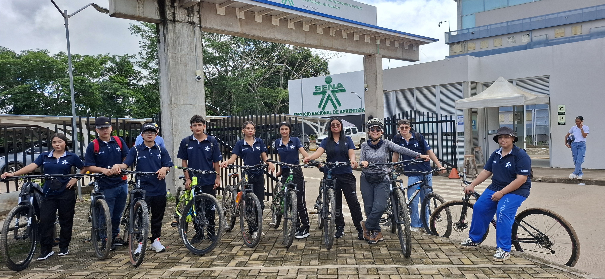
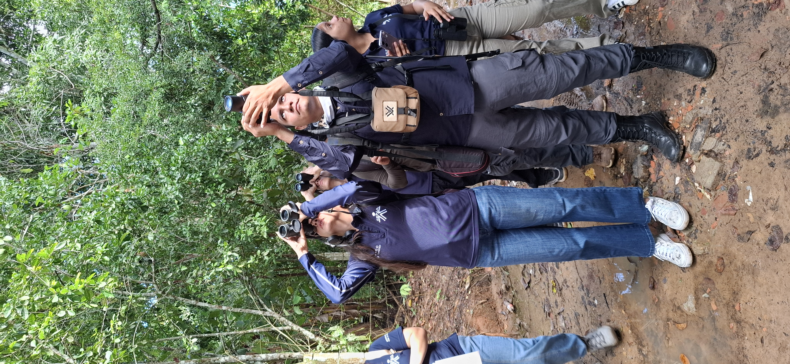

El turismo es uno de los principales motores económicos del país y una ventana al mundo para mostrar la riqueza natural y cultural de nuestras comunidades y del departamento del Guaviare, ¡por eso el Técnico en Operación Turística Local es para ti!
Que conocimientos adquiriras?
😉 Diseñar paquetes y experiencias turísticas
Adaptados a la oferta del territorio y a las necesidades del mercado.
🏝️Reconocer la oferta turística del territorio: atractivos naturales, culturales, históricos y de infraestructura disponible.
🏝️Caracterizar la demanda y detectar oportunidades de mercado.
🏝️Aplicar criterios de sostenibilidad en el diseño de experiencias turísticas, cuidando el medio ambiente y respetando las comunidades locales.
🏝️Costear y formalizar un paquete turístico competitivo, con estándares de calidad y normatividad vigente.
⭐¿Qué puedes lograr?
Este técnico te da las herramientas para ser la persona que diseña, opera y vende las experiencias turísticas únicas de tu localidad, convirtiéndote en un promotor activo del desarrollo económico y cultural de tu región.
🏖️Estructurar itinerarios y programas de viaje innovadores y acordes al territorio.
🏖️Elaborar un portafolio turístico competitivo e innovador, listo para ser comercializado en agencias de viajes, operadores o emprendimientos propios.
😉 Coordinar actividades turísticas
Aplicando protocolos, normatividad vigente y estándares de servicio.
🪂Planear y organizar los recursos humanos, técnicos y financieros necesarios para la operación turística.
🪂Conocer y aplicar protocolos de servicio y planes de contingencia en situaciones de riesgo o emergencias.
🪂Implementar planes de acción y planes de seguridad turística, con énfasis en la atención responsable al viajero.
⭐¿Qué puedes lograr?
Desarrolla las habilidades para atender a las personas, entender sus problemas y ser su solución.
Liderar la operación de actividades turísticas garantizando calidad, seguridad y cumplimiento normativo.
Resolver contingencias y emergencias en la operación turística, aplicando protocolos y planes de acción establecidos.
Implementar procesos de supervisión y evaluación del servicio, proponiendo mejoras continuas para la satisfacción del cliente.

😉 Atender y asistir a turistas
En procesos de viaje, reservas, servicios hoteleros, transporte y documentos migratorios.
Manejar los procesos de reserva.
Conocer los servicios aeroportuarios y terrestres.
Reconocer la clasificación hotelera.
Orientar al viajero sobre el uso de documentos de viaje y condiciones migratorias.
Desarrollar una atención al turista con trato cortés, empático y profesional que garantice experiencias memorables.
⭐¿Qué puedes lograr?
Este técnico es tu trampolín. Al terminarlo, puedes:
Gestionar reservas, servicios de transporte y alojamiento de manera eficaz, cumpliendo con los requisitos del mercado turístico.
Brindar una atención personalizada, cortés y profesional, que genere confianza y experiencias positivas en los turistas.
😉 Promover y vender productos y servicios turísticos
Con visión comercial y de emprendimiento.
Conocer las técnicas de mercadeo turístico y las tendencias del mercado nacional e internacional.
Diseñar y aplicar estrategias de promoción en medios digitales y tradicionales.
Usar herramientas de e-commerce y redes sociales para la comercialización de servicios turísticos.
Fortalecer competencias de emprendimiento

⭐¿Qué puedes lograr?
Ser el motor para crear y posicionar experiencias turísticas auténticas y sostenibles que generen desarrollo económico directo en tu propia comunidad o región.
Crear portafolios de servicios turísticos innovadores y competitivos.
Crear un plan de negocios turístico con enfoque en innovación y emprendimiento, aplicable a proyectos propios o comunitarios.
Utilizar herramientas de marketing y e-commerce para posicionar productos y servicios turísticos en el mercado local, nacional e internacional.
Fortalecer competencias de emprendimiento
Podrás desempeñarte como:
• Operador turístico.
• Auxiliar en agencias de viajes y hoteles.
• Promotor de destinos en puntos de información turística.
• Emprendedor de tu propia unidad productiva.
🎓 Certificación
Al finalizar recibirás el título de:
Técnico en Operación Turística Local
🚀 Proyección
Este programa abre la puerta a estudios tecnológicos en el área de turismo y como Guías Profesionales de Turismo
Estudios Profesionales como: Profesional en Turismo, Administrador Turístico, Administrador Turístico y Hotelero